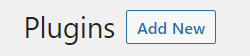
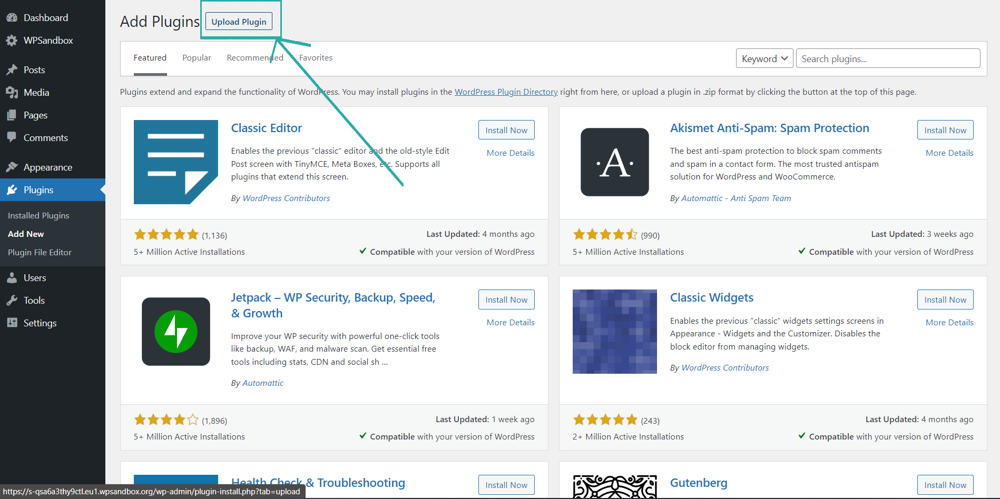
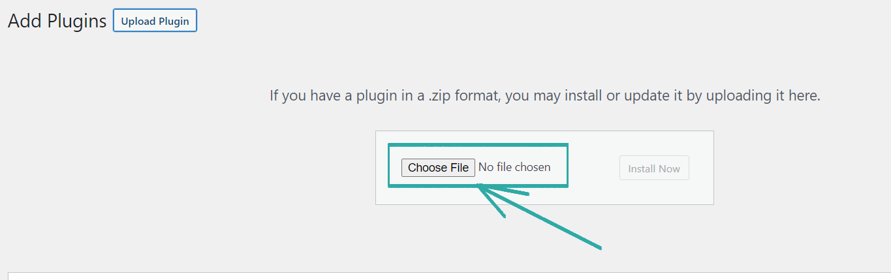
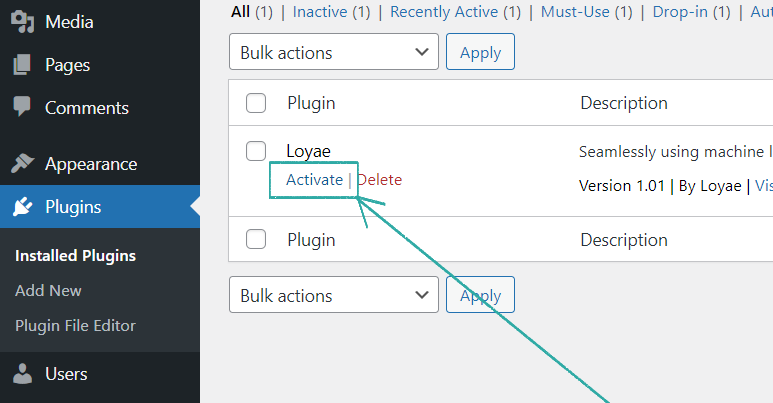
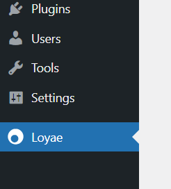

Install the Loyae WordPress Plugin
In the WordPress dashboard, click on "Plugins"
Next, click "Add New."
Here, click "Upload Plugin."
Next, upload the zip folder (Loyae.zip) here.
To activate Loyae, click "Activate" under "Installed Plugins."
Click on "Loyae"
Final step: within the plugin, select the pages you would like to optimize, then click "Optimize."